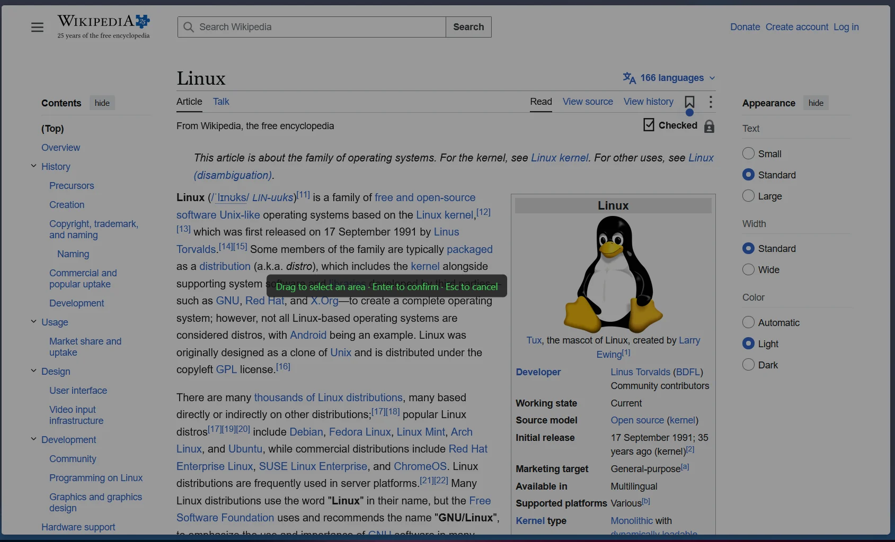
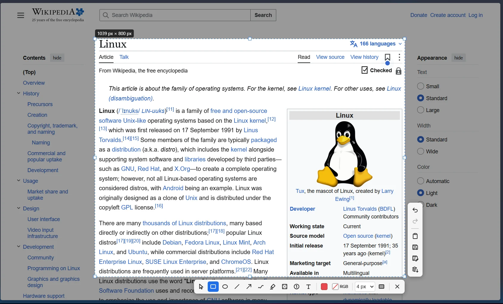
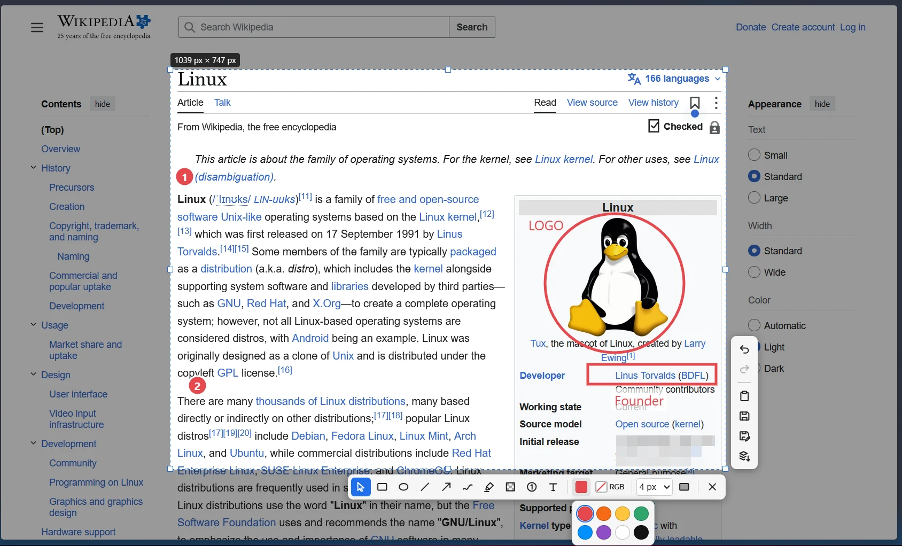
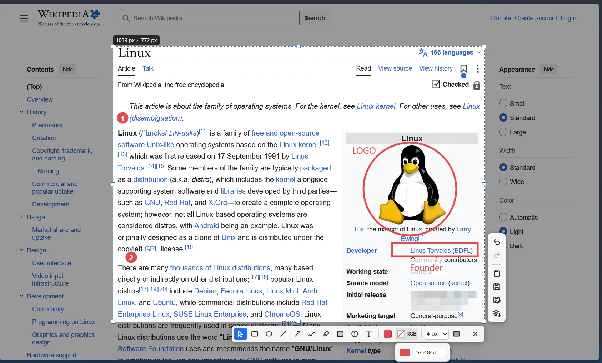

Screenshot dengan anotasi yang tetap bisa diedit.
Tangkap layar Windows, tandai dengan kotak, panah, teks, dan sensor. Setiap tanda adalah objek tersendiri, jadi bisa digeser, diubah, atau dihapus kapan saja, bahkan setelah disimpan.

Dibuat agar hasilnya tetap bisa diperbaiki
Gambar asli tidak pernah diubah. Semua tanda disimpan terpisah di atasnya.
Anotasi yang bisa diedit
Persegi, elips, garis, panah, pena, penyorot, nomor langkah, dan teks. Klik untuk memilih, geser, ubah ukuran, warna, atau ketebalan.
Undo/redo dan proyek
Simpan sebagai proyek .snapmark untuk membukanya lagi dan melanjutkan mengedit. Setiap salin atau simpan juga masuk riwayat.
Sensor yang aman
Mosaik, buram, atau blok hitam. Hasil PNG hanya berisi bagian yang sudah disensor, dan SnapMark memperingatkan sebelum Anda menyimpan proyek yang berisi sensor.
Resolusi asli
Hasil ekspor memakai resolusi layar asli, hanya area terpilih, sama persis dengan yang Anda lihat. Area bisa digeser dan diubah ukurannya kapan saja.
Cepat dan ringkas
Berjalan di area notifikasi. Tekan Print Screen (bisa diganti), pilih area, tekan Enter untuk menyalin atau Ctrl+S untuk menyimpan.
13 bahasa
Antarmuka dan panduan dalam Indonesia, English, Español, Deutsch, 日本語, 简体中文, Français, Italiano, Português, 한국어, Русский, العربية, dan Nederlands.
Tiga langkah
Dari layar ke hasil jadi tanpa membuka aplikasi lain.
- TangkapTekan Print Screen, lalu seret untuk memilih area.
- TandaiPilih alat di bilah alat dan tambahkan anotasi. Ubah kapan saja.
- Salin atau simpanEnter untuk menyalin ke clipboard, Ctrl+S untuk menyimpan PNG.
Seperti apa tampilannya
Tangkapan layar asli dari SnapMark.








Privasi
Tangkapan dan proyek tidak pernah keluar dari komputer Anda. Tidak ada telemetri. Satu-satunya akses jaringan adalah memeriksa pembaruan.
Panduan penggunaan
Pilih bahasa Anda.